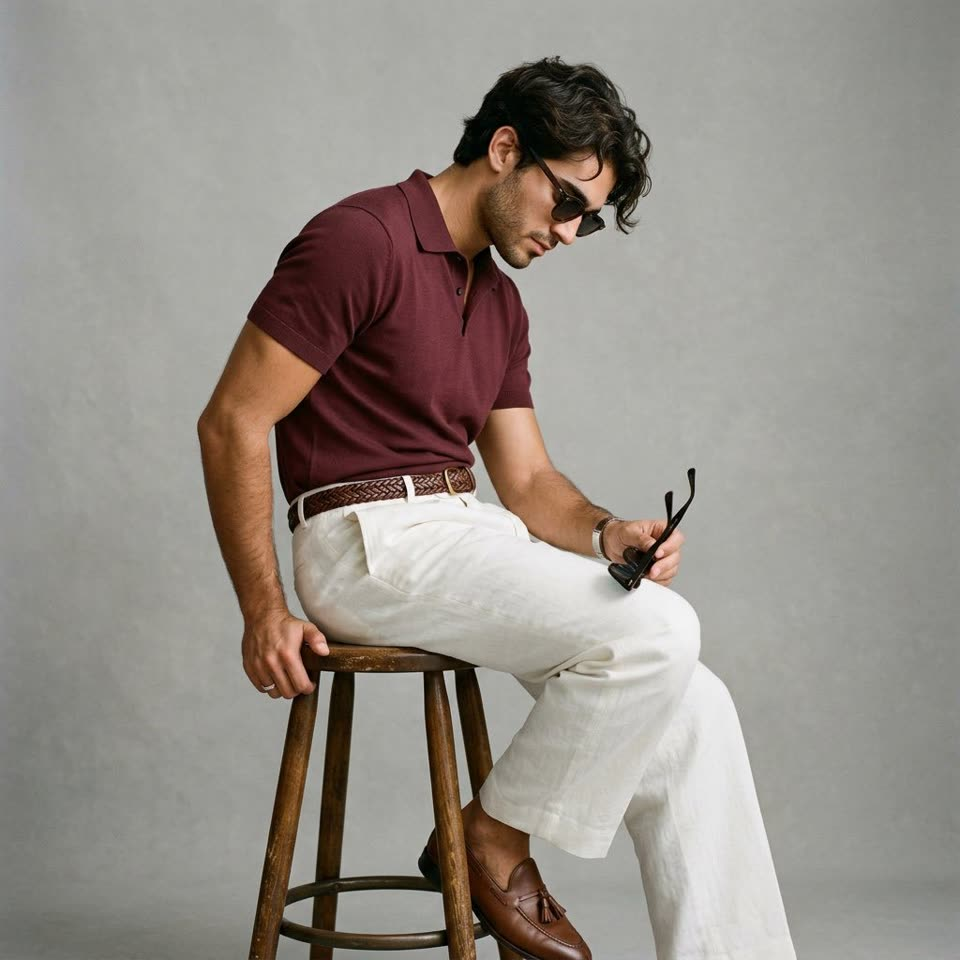

Editorial Fashion Portrait of a Young Man
WRD-007WardrobeNano Banana Proby SnowSeptember

A high-end editorial fashion portrait prompt depicting a young man in profile leaning on a bar stool, styled in a maroon polo shirt and cream trousers with a minimalist commercial studio aesthetic.
Prompt
Editorial fashion photograph of a young man with {argument name="hair style" default="tousled dark wavy hair"}, tan olive skin, defined jawline, short stubble beard and mustache, thick dark eyebrows, brown eyes, wearing dark sunglasses pushed slightly down. He wears a {argument name="shirt color" default="maroon"} short-sleeve polo shirt tucked into wide-leg cream/off-white trousers with a brown braided leather belt, and brown tassel loafers. He stands in profile, leaning forward with one hand resting on the seat of a wooden bar stool, head tilted downward. Plain soft neutral gray studio background, soft even studio lighting, minimalist high-end fashion campaign aesthetic, shot on medium format camera, shallow depth of field, clean commercial look.Tags: product, fashion